Google Play için metinler ve 16 telefon görüntüsü. Görseller aynı oyun arayüzünün mobil Chromium görünümünden, örnek yerel kayıtla alındı; gerçek telefon veya testçi kaydı değildir. Play Console’a yüklenmedi.
Yükleme rehberi · Testçi mesajı
KARA DÜĞÜM
Düğümleri döndür, boruları bağla. 300 bölüm, 15 mekanik, 6 farklı tema.
KARA DÜĞÜM, taş düğümleri döndürerek boru bağlantılarını tamamladığın bir bulmaca oyunu. Her hamlede ağın yapısını incele, bağlantıları kur ve bir sonraki bölüme ilerle. 300 bölümlük bir yolculuk Dört çarpı dört tahtalardan sekiz çarpı sekiz ağlara uzanan 300 bölüm, altı bölgeye ayrılır. Tamamladığın bölümleri yeniden oynayarak eksik yıldızlarını geliştirebilirsin. 15 farklı mekanik Ters dönüş, aynalı düğümler, çift enerji hattı, ışınlanma kapıları, hareketli engeller ve çift katman gibi kuralları keşfet. Mekaniği Keşfet gösterimleri ve yıldız hedefleri, oynadığın bölümün kurallarını anlamana yardımcı olur. Mekanik ustalığını takip et Her bulmaca türünde tamamladığın ve üç yıldız kazandığın bölümleri gör. Tür filtresini Açık, Tamamlanan ve Eksik yıldız seçenekleriyle birlikte kullanarak çalışmak istediğin bölümleri bul. Altı taş ve ışık teması Kadim Taş, Gece Tapınağı, Çöl Harabeleri, Gece Moru, Zümrüt Mabedi ve Yakut Ateşi ile oyun tahtasının görünümünü değiştir. Oyun içi kristallerinle yeni temalar ve ipucu paketleri aç. Her gün yeni bir hedef Günün Bulmacası'ndaki 5×5 meydan okumada kendi en az hamle ve en iyi süre rekorunu geliştir. Günlük ve haftalık görevleri tamamlayarak oyun içi ödüller topla. Kaldığın yerden devam et Yarım kalan bulmacana geri dön. Google Play Oyunlar hesabıyla bulut kaydını kullanarak desteklenen cihazların arasında ilerlemeni eşitle. Arayüzde 25 dil seçeneği bulunur. Bulmacalar çevrimdışı oynanabilir. Reklamlar, Google Play Oyunlar hizmetleri, bulut eşitlemesi ve çevrim içi sıralama için internet bağlantısı gerekir. Oyun reklam içerir. İsteğe bağlı ödüllü reklamlar ipucu kuponu veya ek oyun içi ödüller sağlayabilir; bölüm geçişlerinde geçiş reklamları gösterilebilir. Gizlilik politikası: https://mhmtbsr60.github.io/KaraDugum/privacy-policy.html
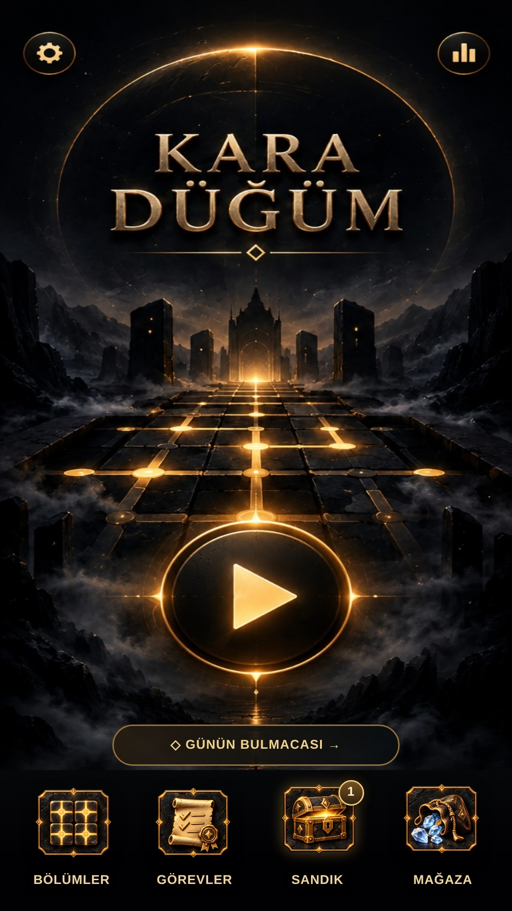
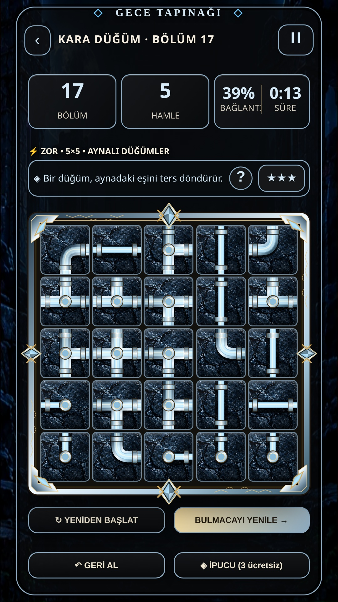
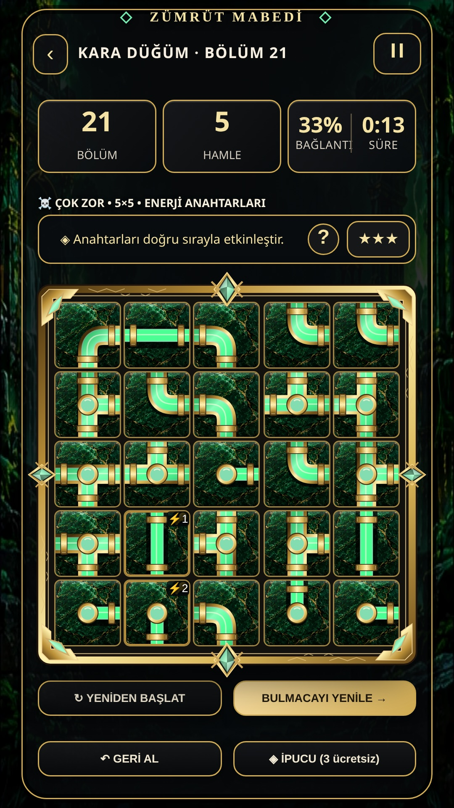
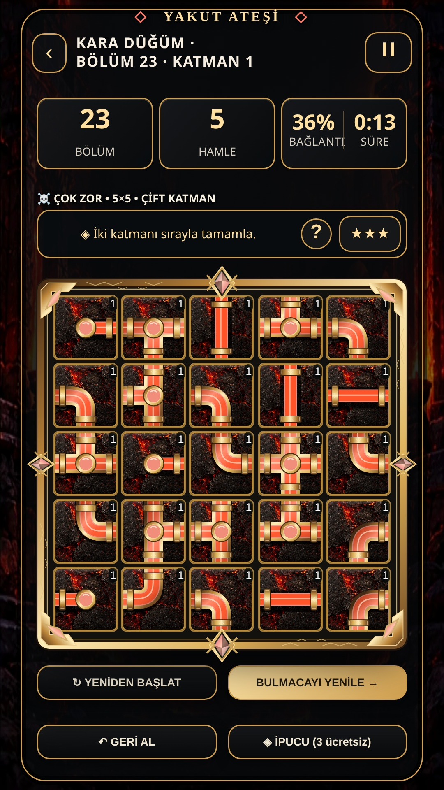
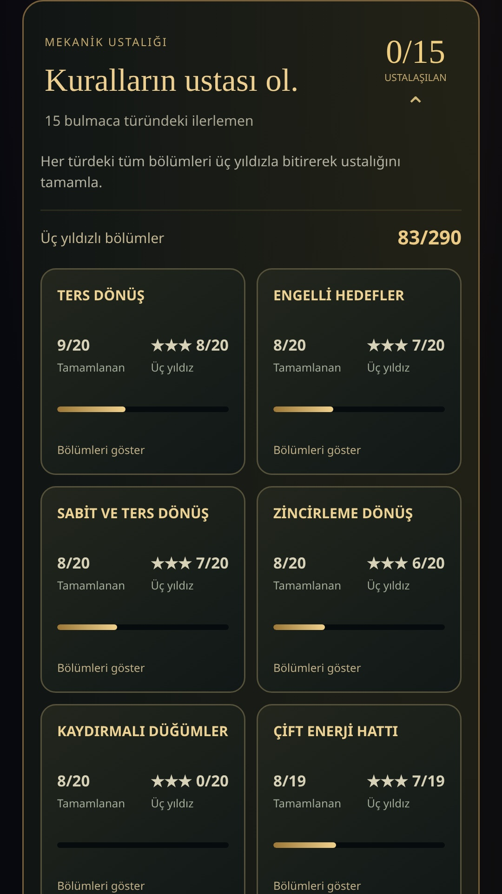
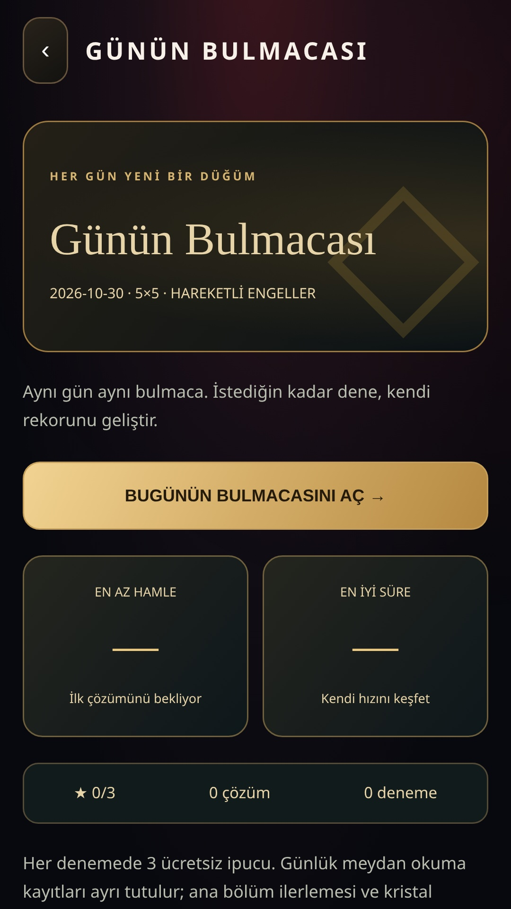
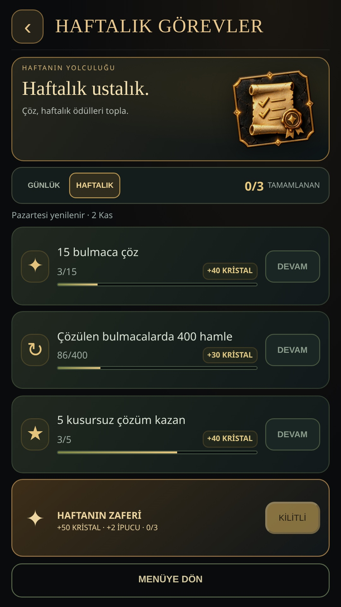
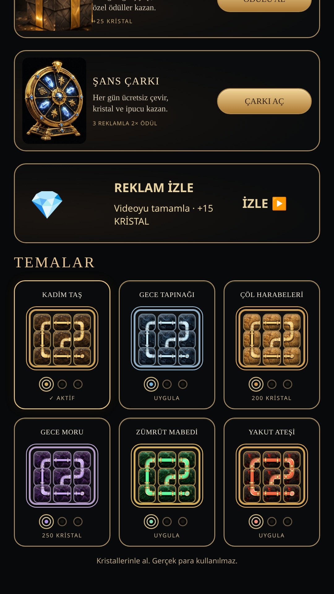
KARA DÜĞÜM
Rotate nodes, connect pipes. Master 300 levels with 15 puzzle mechanics.
KARA DÜĞÜM is a puzzle game about rotating stone nodes and completing pipe connections. Study the network, connect its paths and find your way to the next level. A journey through 300 levels Explore six regions, from compact 4×4 boards to intricate 8×8 networks. Replay completed levels to improve your stars. 15 puzzle mechanics Discover reverse rotations, mirrored nodes, dual energy lines, portals, moving obstacles, two-layer boards and more. Optional mechanic demonstrations and star targets help explain each challenge. Track your mechanic mastery See your completed and three-star levels for each puzzle type. Combine the mechanic filter with Open, Completed and Missing stars to find the levels you want to practise. Six stone and light themes Change the board's appearance with Ancient Stone, Night Temple, Desert Ruins, Midnight Purple, Emerald Sanctuary and Ruby Fire. Use in-game crystals to unlock themes and hint packs. A fresh daily challenge Take on a daily 5×5 puzzle and improve your personal best move count and time. Complete daily and weekly quests to collect in-game rewards. Continue your journey Return to an unfinished puzzle. Use a Google Play Games account for cloud saves and progress sync across supported devices. Choose from 25 interface languages. Puzzles can be played offline. Ads, Google Play Games services, cloud sync and online leaderboards require an internet connection. The game contains ads. Optional rewarded ads can provide hint coupons or extra in-game rewards. Interstitial ads may appear between levels. Privacy policy: https://mhmtbsr60.github.io/KaraDugum/privacy-policy.html
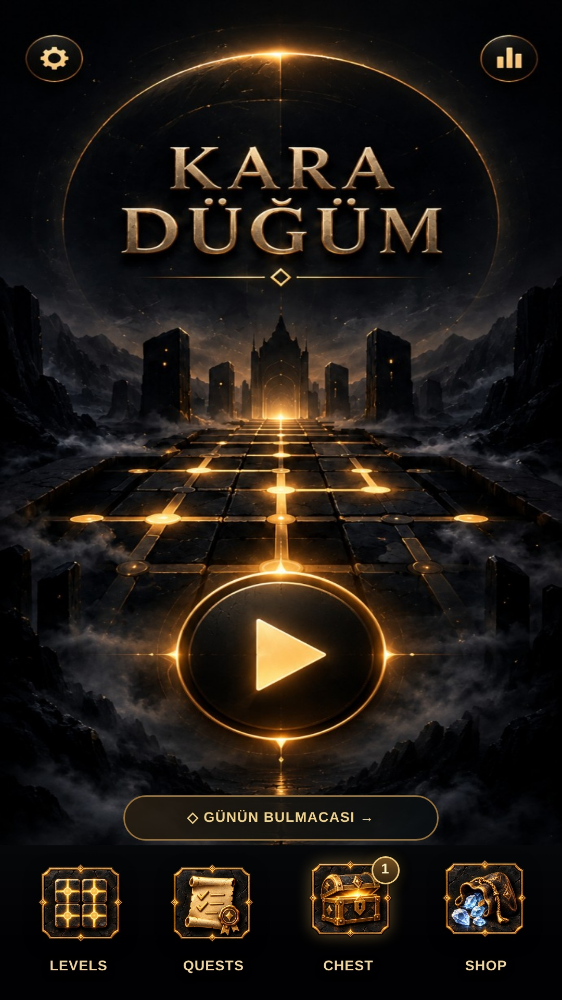
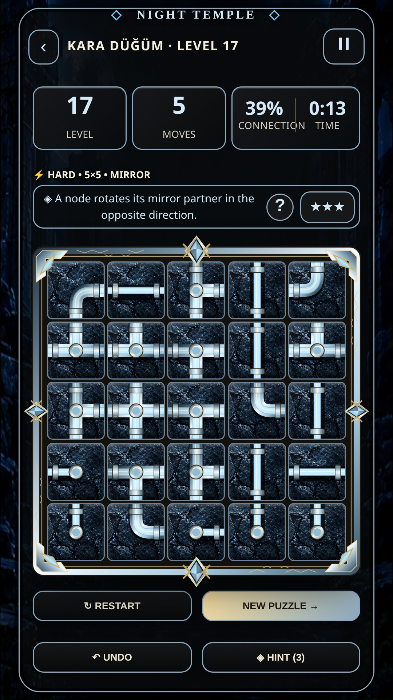
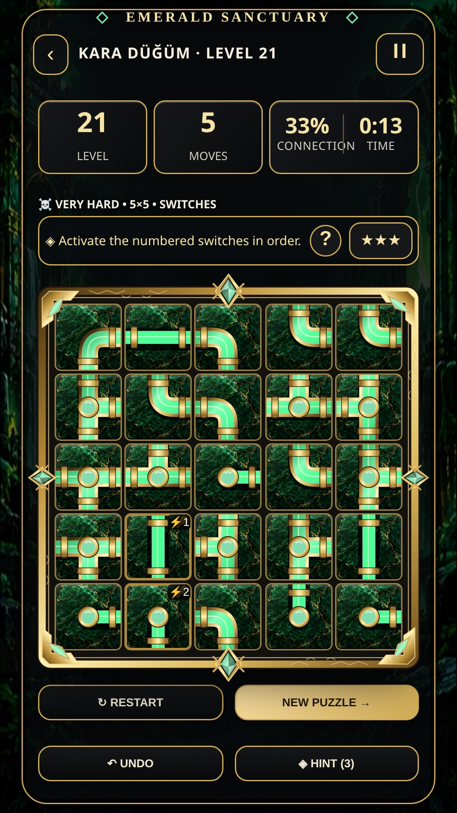
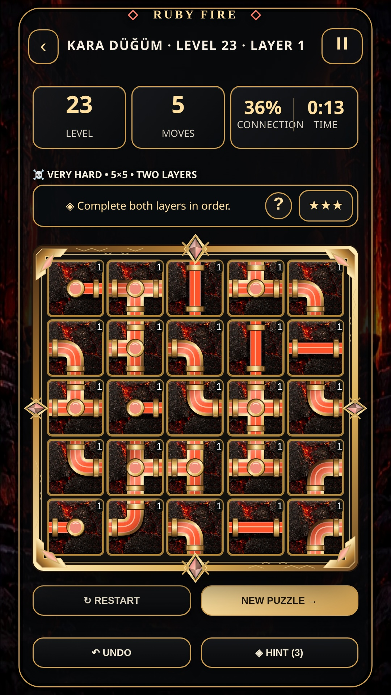
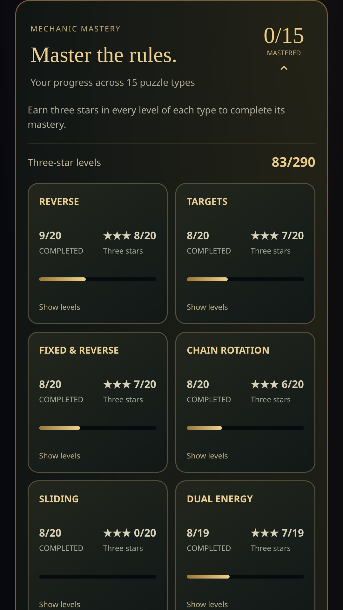
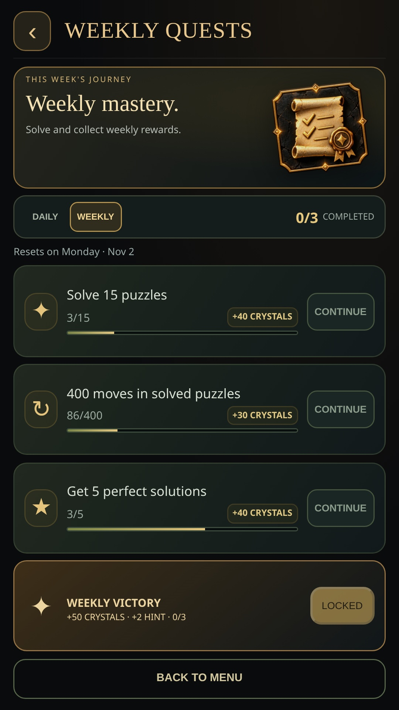
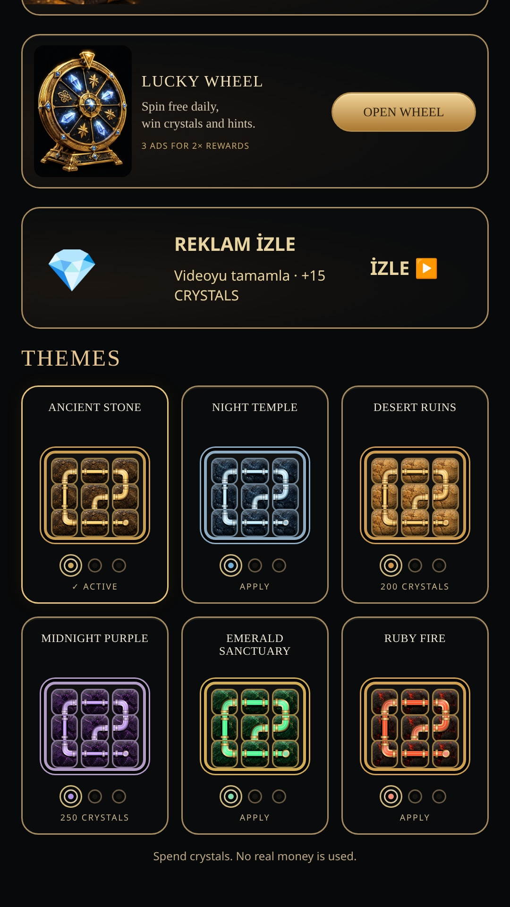